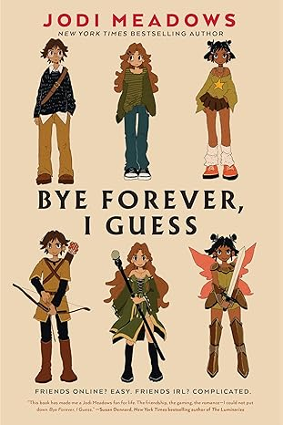
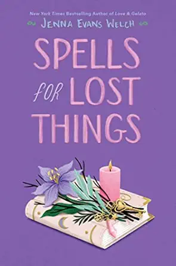
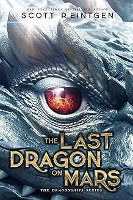
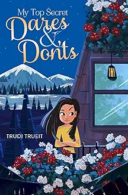
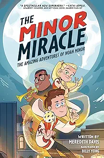
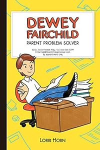
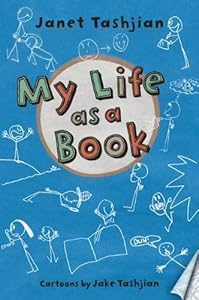

Bye Forever, I Guess follows 13-year-old Ingrid, a shy, introverted girl who lives a double life — invisible at school and secretly popular online through her anonymous account that posts funny wrong-number texts. After her manipulative 'best friend' Rachel humiliates her, Ingrid drops her and retreats further into her online world, where she strikes up a sweet, anonymous connection with a mystery texter she knows only as "Traveler" while playing the MMORPG Ancient Tomes Online. The catch? She begins to suspect Traveler may be a new, popular classmate whose original text was actually meant for Rachel — forcing this guarded, grief-carrying girl to decide whether she can finally let someone in for real.


Spells for Lost Things by Jenna Evans Welch is a YA novel set in Salem, Massachusetts. Willow has never felt like she belonged anywhere and dreams of traveling the world, but those plans are put on hold when her distant mother drags her to Salem to sort out the affairs of an aunt Willow never knew she had — one who may or may not have been a witch. There she meets Mason, a loner who has spent his life bouncing in and out of foster homes, constantly searching for his mother who can't take care of him. By chance the two teens meet, and through their mutual feelings of loss, they go on a mission to uncover the secrets of Willow's family history and find a way to break an apparent curse that has plagued the women in her family for generations — all while a sweet romance quietly blossoms between them.
The Last Dragon on Mars by Scott Reintgen is a sci-fi/fantasy middle grade mashup. Thirteen-year-old Lunar Jones, known as "Dad" by the other orphans at the understaffed Martian Relocation Clinic, is a scrapper surviving in the dying Mars settlement of Harvest, where Martian plants, animals, and weather all pose threats to survival. Humanity won a war against Mars's dragon long ago, hoping a dead dragon could terraform the planet like Earth's had — but it backfired, leaving Mars cursed and doomed. After a bloody attack by a rival salvage group, Lunar wakes up in an underground bunker under the care of a general who is secretly raising a dragon named Dread — and Lunar unexpectedly becomes its rider. Together with his group of friends, the Dread Knights, Lunar sets out to save not just Mars, but the entire solar system.


My Top Secret Dares & Don'ts by Trudi Trueit is a fun middle grade novel. Twelve-year-old Kestrel Adams loves to keep lists, and her most important one is her secret Dares and Don'ts — all the things she longs to try and all the things she'll never dare to do. When her grandfather dies, her family heads north from Seattle to lend a hand at the family ski lodge in Whistler, BC for the summer. When Kestrel discovers that two bratty twins are sabotaging the family's efforts, she realizes things are even worse than she thought — the twins' father is a property developer trying to drive the lodge out of business. Throughout it all, Kestrel has insecurities and anxieties like her fear of heights that make her a relatable protagonist as she works to prove herself and save her family's beloved lodge.
The Minor Miracle by Meredith Davis is a middle grade superhero adventure. As a baby, Noah Minor mysteriously survived a fall from a sixteen-story balcony, but ever since, his life has been pretty boring. Entering seventh grade, he hopes to be less ordinary — until a routine vision test reveals he can manipulate gravity and he's recruited to train with Gravitas, a top-secret government agency. Things get complicated fast when Noah learns his great-uncle Saul is on Gravitas's most-wanted list — but his great-uncle's explanation of his actions also seems valid, leaving Noah torn between trusting the secret organization and the uncle who might help him reach his full potential. At its heart, it's a story of friendship, trust, and taking responsibility — with plenty of humor, basketball, and gravity-defying action along the way.


The Dewey Fairchild series by Lorri Horn is a funny middle grade trilogy about a kid who runs a secret problem-solving business. Dewey Fairchild isn't just good with parents — he's great with them, so good that he's built a thriving business out of it, with an assistant named Clara who is a great alibi and an even better baker. He settles troublesome cases like overprotective moms and nose-picking dads — until his toughest case turns up when he overhears his own parents talking about a huge change for his family.
The My Life As a... series by Janet Tashjian (illustrated by her son Jake) is a beloved middle grade series following the hilarious misadventures of Derek Fallon, a Southern California kid who loves drawing and comics but struggles with reading. Praised by Kirkus Reviews as "a kinder, gentler Wimpy Kid with all the fun," the series follows Derek's coming-of-age misadventures in school and through his attempts to follow his bliss as a cartoonist, video gamer, stunt boy, and ninja.
